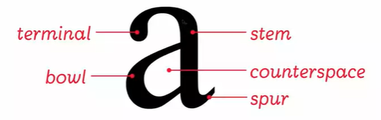

The lexicon system
The anatomy of letters

letter anatomy
terminology: terminal, bowl, stem, bowl, counterspace, spur.
Words and spacing
cap-height(T height), baseline(P) x-height.descender,ascender
tracking = letter spacing + word spacing.
Type size: the point system
金属印刷，72 points per inch, can only choose fixed size points.
- 120,96,72,48—Headlines
- 36,24—Subheads
- 12,11,10,9—Text
- 8,6—Footnotes
Typesetting Text
Justified, Range left, Range right.
typeface influences the typesize shown.
Choose a typeface
regular/roman, bold, italic, bold italic
- typeface vs. font
- serif vs. San serif(modern)
- Serif: Old style, transitional, Modern, Egyptian
- Sanserif: Grotesque, Geometric, Humanist
- Weight(Thickness)